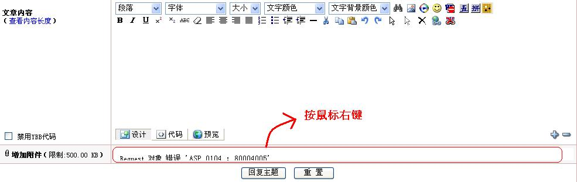

帮助：如何在帖子中插入上传图片
#1 帮助：如何在帖子中插入上传图片 作者：有志青年 发表时间：2008-5-14 19:42:25
要想在帖子中插入图片分成两种情况：
一、网上的图片，在这里显示：
获得网上图片的实际地址【右键点击图片查看属性可以得到地址】，然后点击发帖窗口上的 按钮，填入图片地址即可。
按钮，填入图片地址即可。
二、上传电脑中的图片到论坛中来：
点击发帖窗口[发表帖子或者回复帖子]下方 【 增加附件（限制:500.00 KB）】后面的“ ”按钮，选择电脑中的图片，然后点击“上传”即可。当然图片的大小不能超过500KB。
增加附件（限制:500.00 KB）】后面的“ ”按钮，选择电脑中的图片，然后点击“上传”即可。当然图片的大小不能超过500KB。
如果有棋谱也可以先将棋谱压缩为rar文件然后通过此方式上传。
目前支持上传的有：jpg、gif、bmp和png图片格式以及zip和rar压缩格式的文件。
#2 Re:帮助：如何在帖子中插入上传图片 作者：汪洋孤舟 发表时间：2008-5-19 22:29:44
那本机图片又怎么传呢？有时回帖也想传图怎么办？（我是说本机的） 这个窗口功能虽然很多，但是有很大一部分不实用，例如缩进量那些，很少人会用到！
我说多了，不好意思！
#3 Re:帮助：如何在帖子中插入上传图片 作者：逆刃 发表时间：2008-5-20 12:23:08
如果是回复中要上传本地图片。可以点击要回的帖子上面的回复按钮，就会出现和发贴时一样的页面。如果直接在帖子下面回复的话，就没有上传附件的选项。#4 Re:帮助：如何在帖子中插入上传图片 作者：阿歌 发表时间：2009-2-4 13:38:32
知道的。

#5 Re:帮助：如何在帖子中插入上传图片 作者：刀魂 发表时间：2009-3-7 22:59:32
有些图片 带病毒哦，网站是不是能自动扫描并且加以清楚呢，这点有志大哥得 小心哦#6 Re:帮助：如何在帖子中插入上传图片 作者：小玄 发表时间：2009-3-26 7:53:18

刚才在上传档案时（大于
500k
，要分数次上传），突然出现错误，
按重新读取网页后，先前传的部分档案都不见了（要重新上传）＞＜
后来发现一个方法，只要在出现错误的那一区块，按鼠标右键选重读就可以重新传了，
之前传的档案也不会消失
［ 有志青年 于 2009-3-26 8:27:20 时奖励此帖[金币加 20 威望加1］
#7 Re:帮助：如何在帖子中插入上传图片 作者：紫末 发表时间：2009-7-4 21:39:10
学习中！#8 Re:帮助：如何在帖子中插入上传图片 作者：星月族 发表时间：2009-12-18 16:48:08
原以为只能传网络图片,这下好了#9 Re:帮助：如何在帖子中插入上传图片 作者：小帮帮 发表时间：2009-12-18 18:38:10
我好像还不具备发图片和棋谱的资格